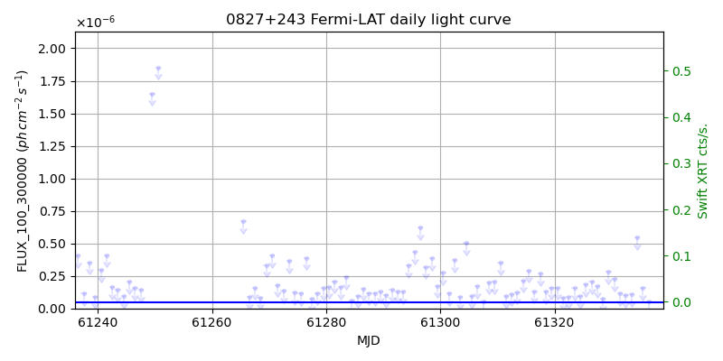
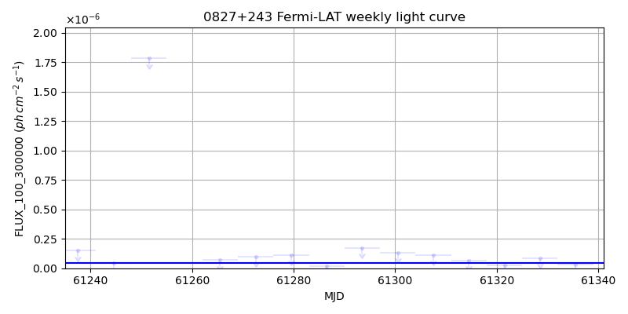
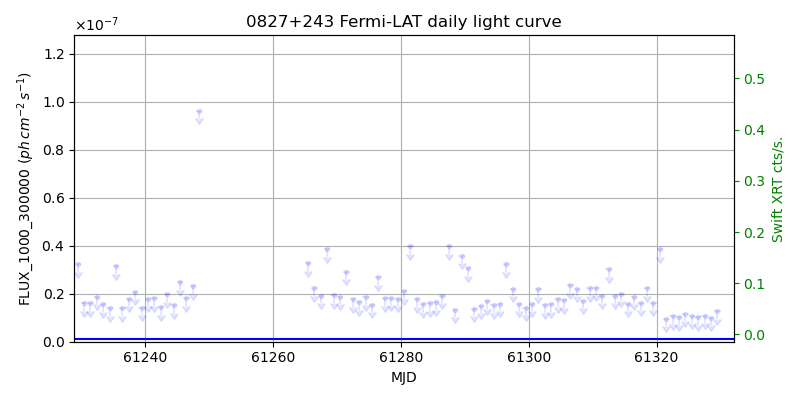
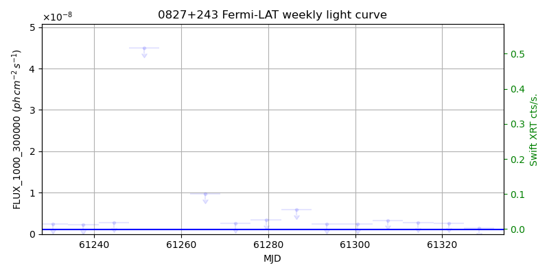

LAT Lightcurve site: https://fermi.gsfc.nasa.gov/ssc/data/access/lat/msl_lc/source/0827p243
Swift site: https://www.swift.psu.edu/monitoring/source.php?source=QSOB0827+243
NED: Query
Time of last update of this page: UT: 2026-10-24 15:19 (MJD: 61337.639)
| Property | Value |
|---|---|
| R.A. | 8:29:57.60 |
| Dec. | 24:13:12.0 |
| z | 0.939 |
| 3FGL SpectrumType | PowerLaw |
| 3FGL PL Index | 2.63 |
| 3FGL Flux_100_300000 | 4.63e-08 1 / (s cm2) |
| 3FGL Flux_1000_300000 | 1.09e-09 1 / (s cm2) |
| 3FGL Flux >200 GeV | 1.97e-13 1 / (s cm2) |
| 3FGL Extrap. Crab >200 GeV | 0.00 |
| 3FGL Flux After EBL Absorption >200GeV | 4.48e-15 1 / (s cm2) |
| 3FGL EBL Crab Fraction >200GeV | 0.00 |

| MJD | dMJD | Flux | dFlux | Frac3FGL | FracCrab>200GeV | EBLFracCrab>200GeV |
|---|---|---|---|---|---|---|
| 61332.50 | 0.50 | 1.02e-07 | 0.00e+00 | 0.00 | 0.00 | 0.00 |
| 61333.50 | 0.50 | 1.10e-07 | 0.00e+00 | 0.00 | 0.00 | 0.00 |
| 61334.50 | 0.50 | 5.46e-07 | 0.00e+00 | 0.00 | 0.00 | 0.00 |
| 61335.50 | 0.50 | 1.57e-07 | 0.00e+00 | 0.00 | 0.00 | 0.00 |
| 61336.50 | 0.50 | 5.08e-08 | 0.00e+00 | 0.00 | 0.00 | 0.00 |

| MJD | dMJD | Flux | dFlux | Frac3FGL | FracCrab>200GeV | EBLFracCrab>200GeV |
|---|---|---|---|---|---|---|
| 61300.50 | 3.50 | 1.34e-07 | 0.00e+00 | 0.00 | 0.00 | 0.00 |
| 61307.50 | 3.50 | 1.13e-07 | 0.00e+00 | 0.00 | 0.00 | 0.00 |
| 61314.50 | 3.50 | 6.73e-08 | 0.00e+00 | 0.00 | 0.00 | 0.00 |
| 61321.50 | 3.50 | 2.44e-08 | 0.00e+00 | 0.00 | 0.00 | 0.00 |
| 61328.50 | 3.50 | 8.61e-08 | 0.00e+00 | 0.00 | 0.00 | 0.00 |

| MJD | dMJD | Flux | dFlux | Frac3FGL | FracCrab>200GeV | EBLFracCrab>200GeV |
|---|---|---|---|---|---|---|
| 61332.50 | 0.50 | 2.78e-08 | 0.00e+00 | 0.00 | 0.00 | 0.00 |
| 61333.50 | 0.50 | 1.75e-08 | 0.00e+00 | 0.00 | 0.00 | 0.00 |
| 61334.50 | 0.50 | 1.52e-08 | 0.00e+00 | 0.00 | 0.00 | 0.00 |
| 61335.50 | 0.50 | 1.35e-08 | 0.00e+00 | 0.00 | 0.00 | 0.00 |
| 61336.50 | 0.50 | 1.39e-08 | 0.00e+00 | 0.00 | 0.00 | 0.00 |

| MJD | dMJD | Flux | dFlux | Frac3FGL | FracCrab>200GeV | EBLFracCrab>200GeV |
|---|---|---|---|---|---|---|
| 61300.50 | 3.50 | 2.42e-09 | 0.00e+00 | 0.00 | 0.00 | 0.00 |
| 61307.50 | 3.50 | 3.31e-09 | 0.00e+00 | 0.00 | 0.00 | 0.00 |
| 61314.50 | 3.50 | 2.74e-09 | 0.00e+00 | 0.00 | 0.00 | 0.00 |
| 61321.50 | 3.50 | 2.64e-09 | 0.00e+00 | 0.00 | 0.00 | 0.00 |
| 61328.50 | 3.50 | 1.49e-09 | 0.00e+00 | 0.00 | 0.00 | 0.00 |
--------------------------------------------------------- Using user-supplied coords: 8:29:57.60 24:13:12.0 2000 --------------------------------------------------------- FLWO UT night of: 2026-10-25 Local Sid. @ Midnight: 01:50 Sunset (-15.0) (local, UT): 18:49 01:49 Sunrise (-15.0) (local, UT): 05:27 12:27 Moonrise (local, UT): Moonset (local, UT): Moon phase: 0.99 --------------------------------------------------------- AzTime LSID UT Obj_el Obj_az Mn_el Mn_az Sep. --------------------------------------------------------- 18:49 20:39 01:49 -34.2 2.1 26.2 94.5 106.2 19:19 21:09 02:19 -33.5 10.4 32.4 98.6 105.9 19:49 21:39 02:49 -31.9 18.3 38.6 103.2 105.7 20:19 22:09 03:19 -29.5 25.8 44.7 108.4 105.4 20:49 22:39 03:49 -26.3 32.7 50.6 114.6 105.2 21:19 23:09 04:19 -22.6 39.0 56.2 122.3 105.0 21:49 23:39 04:49 -18.3 44.7 61.2 132.2 104.8 22:19 00:09 05:19 -13.6 49.9 65.5 145.3 104.6 22:49 00:39 05:49 -8.6 54.7 68.4 162.2 104.4 23:19 01:10 06:19 -1.9 59.0 69.4 182.2 104.2 23:49 01:40 06:49 2.7 62.9 68.2 202.0 104.0 00:19 02:10 07:19 8.3 66.6 65.1 218.6 103.8 00:49 02:40 07:49 14.2 70.1 60.8 231.3 103.6 01:19 03:10 08:19 20.3 73.5 55.7 240.9 103.4 01:49 03:40 08:49 26.4 76.7 50.1 248.5 103.2 02:19 04:10 09:19 32.7 79.9 44.3 254.6 102.9 02:49 04:40 09:49 39.0 83.2 38.2 259.8 102.7 03:19 05:10 10:19 45.4 86.6 32.1 264.4 102.5 03:49 05:40 10:49 51.8 90.4 26.0 268.5 102.2 04:19 06:10 11:19 58.2 94.8 19.9 272.4 102.0 04:49 06:40 11:49 64.5 100.3 13.8 276.2 101.7 05:19 07:11 12:19 70.7 108.0 7.8 279.9 101.4 05:27 07:18 12:27 72.3 110.6 6.2 280.9 101.4 --------------------------------------------------------- Moon up all night, no dark time. Dark hours >55 deg.: 0.00